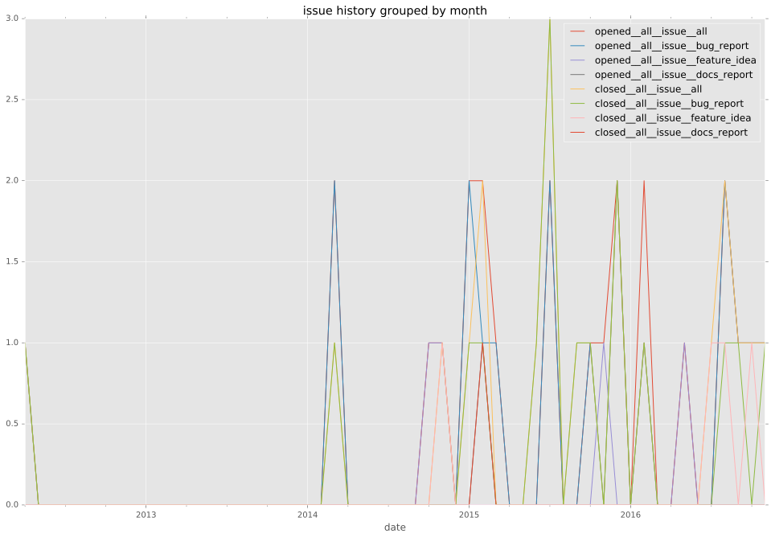
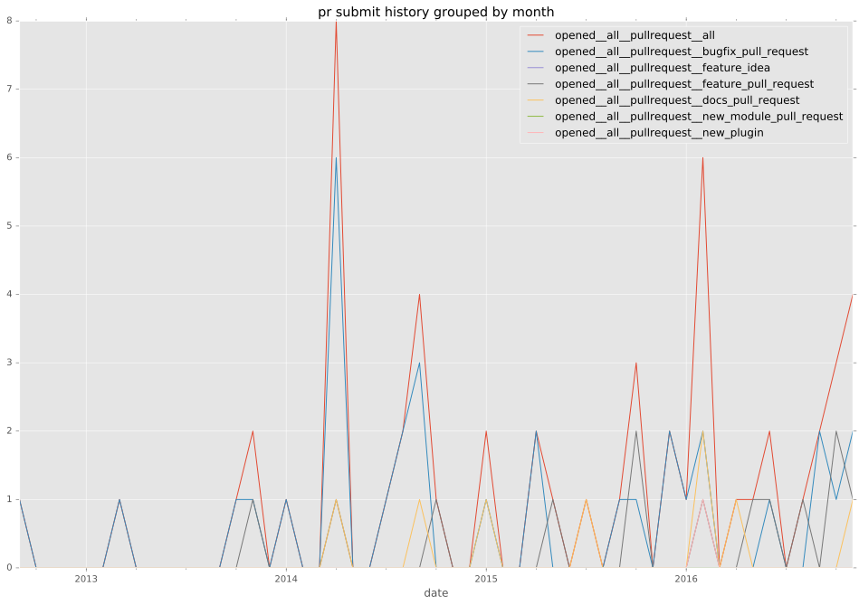
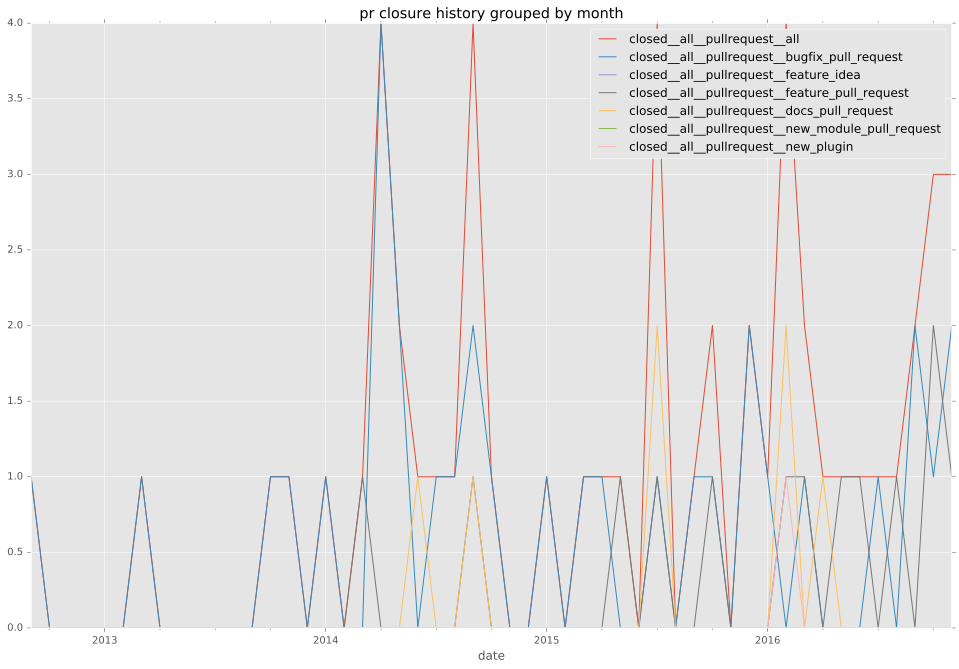

total issue counts
bugfix pull request: 26
docs report: 1
pullrequest: 42
docs pull request: 5
feature pull request: 11
feature idea: 5
issue: 22
bug report: 16
issue history

pullrequest history


days open by issue type
feature pull request
count: 12
std: 93.3395560696
min: 0
max: 272
median: 21.5
mean: 78.5
all
count: 78
std: 77.4350866255
min: 0
max: 448
median: 0.0
mean: 32.1666666667
pullrequest
count: 0
std: nan
min: nan
max: nan
median: nan
mean: nan
docs pull request
count: 7
std: 88.9089957418
min: 2
max: 193
median: 8.0
mean: 65.1428571429
docs report
count: 1
std: nan
min: 0
max: 0
median: 0.0
mean: 0.0
bugfix pull request
count: 39
std: 6.85161801079
min: 0
max: 22
median: 0.0
mean: 2.94871794872
feature idea
count: 3
std: 98.1495457622
min: 0
max: 170
median: 0.0
mean: 56.6666666667
issue
count: 0
std: nan
min: nan
max: nan
median: nan
mean: nan
bug report
count: 16
std: 121.609141652
min: 0
max: 448
median: 0.0
mean: 51.625
closures grouped by total days open